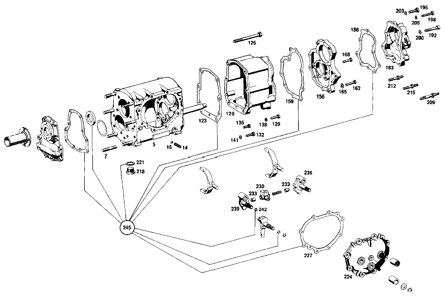

| № | Артикул | Название | Кол. | Примечание | Ограничение |
|---|---|---|---|---|---|
| 5 | A 117 260 14 11 | - КОРПУС КП | 1 | Z 10.879/01, Z 10.879/02, Z 10.879/03, Z 10.879/04 | |
| 9 | A 117 260 02 27 | - ПОДДЕРЖИВАЮЩИЙ МОСТ | 1 | Z 10.879/01, Z 10.879/02, Z 10.879/03, Z 10.879/04 [402] БОЛЬШЕ НЕ ПОСТАВЛЯЕТСЯ [014] FROM TRANSMISSION 006171 | |
| 11 | N 001481 005017 | - Распорный штифт | 1 | Z 10.879/01, Z 10.879/02, Z 10.879/03, Z 10.879/04 [014] FROM TRANSMISSION 006171 | |
| 14 | A 117 993 08 01 | - ПРУЖИНА | 1 | Z 10.879/01, Z 10.879/02, Z 10.879/03, Z 10.879/04 | |
| 16 | N 005401 309000 | - Шар | 1 | Z 10.879/01, Z 10.879/02, Z 10.879/03, Z 10.879/04 | |
| 18 | A 117 263 13 02 | - ПРОМЕЖУТОЧНЫЙ ВАЛ | - | Z 10.879/01, Z 10.879/02, Z 10.879/03, Z 10.879/04 | |
| 18 | A 117 263 25 02 | - ПРОМЕЖУТОЧНЫЙ ВАЛ | 1 | Z 10.879/01, Z 10.879/02, Z 10.879/03, Z 10.879/04 | |
| 20 | A 117 263 03 13 | - ШЕСТЕРНЯ | 1 | ТРЕТЬЯ ПЕРЕДАЧА Z 10.879/01, Z 10.879/03 | |
| 22 | A 117 263 08 10 | - ШЕСТЕРНЯ | 1 | Z 10.879/01, Z 10.879/03 | |
| 24 | A 001 981 20 25 | - ШАРИКОПОДШИПНИК | - | Z 10.879/01, Z 10.879/02, Z 10.879/03, Z 10.879/04 | |
| 24 | A 001 981 71 25 | - ШАРИКОПОДШИПНИК | - | Z 10.879/01, Z 10.879/02, Z 10.879/03, Z 10.879/04 | |
| 24 | A 004 981 42 01 | - Подшипник с цил. роликами | 1 | Z 10.879/01, Z 10.879/02, Z 10.879/03, Z 10.879/04 | |
| 26 | N 005412 600206 | - Роликовый подшипник | 1 | Z 10.879/01, Z 10.879/02, Z 10.879/03, Z 10.879/04 | |
| 28 | A 117 260 14 20 | - ПРИВОДНОЙ ВАЛ | 1 | Z 10.879/01, Z 10.879/03 | |
| 30 | A 002 981 06 25 | - ШАРИКОПОДШИПНИК | 1 | Z 10.879/01, Z 10.879/02, Z 10.879/04 | |
| 32 | A 117 262 14 05 | - ВТОРИЧНЫЙ ВАЛ | 1 | Z 10.879/01, Z 10.879/02, Z 10.879/03, Z 10.879/04 | |
| 34 | A 117 260 11 44 | - ШЕСТЕРНЯ | 1 | ТРЕТЬЯ ПЕРЕДАЧА Z 10.879/01 [402] БОЛЬШЕ НЕ ПОСТАВЛЯЕТСЯ | |
| 36 | A 002 981 00 10 | - ПОДШИПНИК ИГОЛЬЧАТЫЙ | 1 | ТРЕТЬЯ ПЕРЕДАЧА Z 10.879/01 | |
| 42 | A 000 981 82 12 | - СЕПАРАТОР ИГОЛЬЧ. ПОДШ. | - | Z 10.879/01, Z 10.879/03 | |
| 42 | A 004 981 08 10 | - ПОДШИПНИК ИГОЛЬЧАТЫЙ | 1 | ПЕРВАЯ И ВТОРАЯ ПЕРЕДАЧА Z 10.879/01, Z 10.879/03 | |
| 44 | A 117 260 07 44 | - ШЕСТЕРНЯ | 1 | 2ND SPEED с SYBCHRONIZER CONE Z 10.879/01 [402] БОЛЬШЕ НЕ ПОСТАВЛЯЕТСЯ | |
| 46 | A 117 260 33 45 | - Корпус синхронизатора | 1 | ПЕРВАЯ И ВТОРАЯ ПЕРЕДАЧА Z 10.879/01, Z 10.879/02 [012] WITH 108.016,018,019 R.H.D. ONLY | |
| 48 | A 117 262 04 35 | - СИНХРОНИЗАТОР | - | Z 10.879/01 [402] БОЛЬШЕ НЕ ПОСТАВЛЯЕТСЯ [019] БОЛЬШЕ НЕ ПОСТАВЛЯЕТСЯ | |
| 50 | A 115 262 14 23 | - СКОЛЬЗ. МУФТА СИНХРОНИЗ. | - | Z 10.879/01, Z 10.879/02 [402] БОЛЬШЕ НЕ ПОСТАВЛЯЕТСЯ [019] БОЛЬШЕ НЕ ПОСТАВЛЯЕТСЯ [012] WITH 108.016,018,019 R.H.D. ONLY | |
| 52 | A 117 262 04 11 | - ШЕСТЕРНЯ | - | Z 10.879/01 | |
| 52 | A 117 262 10 11 | - ШЕСТЕРНЯ | 1 | ПЕРВАЯ ПЕРЕДАЧА Z 10.879/01 [402] БОЛЬШЕ НЕ ПОСТАВЛЯЕТСЯ | |
| 54 | A 117 262 02 51 | - Проставочное кольцо | 1 | Z 10.879/01 | |
| 56 | A 003 981 02 10 | - ПОДШИПНИК ИГОЛЬЧАТЫЙ | 1 | 1ST SPEED GEAR Z 10.879/01 | |
| 60 | A 002 981 06 25 | - ШАРИКОПОДШИПНИК | 1 | Z 10.879/01, Z 10.879/02, Z 10.879/03, Z 10.879/04 | |
| 62 | A 117 991 05 68 | - УСТАНОВОЧНАЯ ПРУЖИНА | 2 | Z 10.879/01, Z 10.879/02, Z 10.879/03, Z 10.879/04 | |
| 64 | A 117 262 01 52 | - РАСПОРНАЯ ШАЙБА | NB | 3,8 MM Z 10.879/01, Z 10.879/02, Z 10.879/03, Z 10.879/04 [402] БОЛЬШЕ НЕ ПОСТАВЛЯЕТСЯ | |
| 70 | A 117 262 04 21 | - ШЕСТЕРНЯ | 1 | Z 10.879/01, Z 10.879/02, Z 10.879/03, Z 10.879/04 [402] БОЛЬШЕ НЕ ПОСТАВЛЯЕТСЯ | |
| 75 | A 117 260 08 31 | - ТЯГА ПЕРЕКЛ. ПЕРЕДАЧ | 1 | Z 10.879/01, Z 10.879/02, Z 10.879/03, Z 10.879/04 [402] БОЛЬШЕ НЕ ПОСТАВЛЯЕТСЯ | |
| 80 | A 117 260 28 45 | - СИНХРОНИЗАТОР | 1 | ПЯТАЯ ПЕРЕДАЧА Z 10.879/01, Z 10.879/02, Z 10.879/03, Z 10.879/04 | |
| 82 | A 117 262 03 35 | - СИНХРОНИЗАТОР | - | Z 10.879/01, Z 10.879/02, Z 10.879/03, Z 10.879/04 [402] БОЛЬШЕ НЕ ПОСТАВЛЯЕТСЯ [019] БОЛЬШЕ НЕ ПОСТАВЛЯЕТСЯ | |
| 84 | A 180 993 41 01 | - пружина | 3 | Z 10.879/01, Z 10.879/02, Z 10.879/03, Z 10.879/04 | |
| 86 | N 005401 306500 | - Шар | 3 | 6.5mm Z 10.879/01, Z 10.879/02, Z 10.879/03, Z 10.879/04 | |
| 90 | A 117 262 01 40 | - ПОВОДОК | 3 | Z 10.879/01, Z 10.879/02, Z 10.879/03, Z 10.879/04 | |
| 93 | A 117 262 10 23 | - СКОЛЬЗ. МУФТА СИНХРОНИЗ. | - | Z 10.879/01, Z 10.879/02, Z 10.879/03, Z 10.879/04 [417] БОЛЬШЕ НЕ ПОСТАВЛЯЕТСЯ, ЗАКАЗЫВАТЬ КОМПЛЕКТ ПОСТАВКИ [402] БОЛЬШЕ НЕ ПОСТАВЛЯЕТСЯ [019] БОЛЬШЕ НЕ ПОСТАВЛЯЕТСЯ | |
| 96 | A 094 990 73 05 | - Стопорное кольцо | 1 | Z 10.879/01, Z 10.879/02, Z 10.879/03, Z 10.879/04 | |
| 100 | A 115 262 16 34 | - Кольцо синхронизатора | 1 | ПЯТАЯ ПЕРЕДАЧА Z 10.879/01, Z 10.879/02, Z 10.879/03, Z 10.879/04 | |
| 105 | A 117 262 04 51 | - ДИСТАНЦИОННОЕ КОЛЬЦО | 1 | Z 10.879/01, Z 10.879/02, Z 10.879/03, Z 10.879/04 | |
| 110 | A 004 981 23 10 | - ПОДШИПНИК ИГОЛЬЧАТЫЙ | 1 | ШЕСТЕРНЯ ПЯТОЙ ПЕРЕДАЧИ Z 10.879/01, Z 10.879/02, Z 10.879/03, Z 10.879/04 | |
| 113 | A 117 260 27 44 | - ШЕСТЕРНЯ | 1 | 5TH SPEED,с SYNCHRONIZER CONE Z 10.879/01, Z 10.879/02, Z 10.879/03, Z 10.879/04 | |
| 116 | A 117 262 12 62 | - ШАЙБА УПОРНАЯ | 1 | ШЕСТЕРНЯ ПЯТОЙ ПЕРЕДАЧИ Z 10.879/01, Z 10.879/02, Z 10.879/03, Z 10.879/04 [402] БОЛЬШЕ НЕ ПОСТАВЛЯЕТСЯ | |
| 120 | A 117 260 07 12 | - КОРПУС КП | 1 | Z 10.879/01, Z 10.879/02, Z 10.879/03, Z 10.879/04 | |
| 123 | A 117 261 06 79 | - ПРОКЛАДКА УПЛОТНИТЕЛЬНАЯ | 1 | Z 10.879/01, Z 10.879/02, Z 10.879/03, Z 10.879/04 | |
| 126 | N 000931 010154 | - Винт | 3 | Z 10.879/01, Z 10.879/02, Z 10.879/03, Z 10.879/04 | |
| 129 | N 000933 010145 | - Винт | 3 | Z 10.879/01, Z 10.879/02, Z 10.879/03, Z 10.879/04 | |
| 132 | N 000933 007019 | - Винт | 1 | Z 10.879/01, Z 10.879/02, Z 10.879/03, Z 10.879/04 | |
| 135 | N 000933 007027 | - Винт | 2 | Z 10.879/01, Z 10.879/02, Z 10.879/03, Z 10.879/04 | |
| 138 | N 000125 010518 | - Шайба | - | Z 10.879/01, Z 10.879/02, Z 10.879/03, Z 10.879/04 | |
| 138 | N 000125 010532 | - Шайба | 6 | Z 10.879/01, Z 10.879/02, Z 10.879/03, Z 10.879/04 | |
| 141 | N 000125 007408 | - Шайба | 3 | Z 10.879/01, Z 10.879/02, Z 10.879/03, Z 10.879/04 | |
| 144 | A 117 263 05 32 | - ШЕСТЕРНЯ ОБРАТНОГО ХОДА | 1 | Z 10.879/01, Z 10.879/02, Z 10.879/03, Z 10.879/04 [402] БОЛЬШЕ НЕ ПОСТАВЛЯЕТСЯ | |
| 147 | A 117 263 02 53 | - РАСПОРН. ТРУБКА | 1 | Z 10.879/01, Z 10.879/02, Z 10.879/03, Z 10.879/04 [402] БОЛЬШЕ НЕ ПОСТАВЛЯЕТСЯ | |
| 150 | A 117 991 06 68 | - УСТАНОВОЧНАЯ ПРУЖИНА | 1 | Z 10.879/01, Z 10.879/02, Z 10.879/03, Z 10.879/04 [402] БОЛЬШЕ НЕ ПОСТАВЛЯЕТСЯ | |
| 153 | A 117 263 06 15 | - ШЕСТЕРНЯ | 1 | ПЯТАЯ ПЕРЕДАЧА Z 10.879/01, Z 10.879/02, Z 10.879/03, Z 10.879/04 | |
| 156 | A 117 260 02 62 | - ДЕРЖАТЕЛЬ | 1 | Z 10.879/01, Z 10.879/02, Z 10.879/03, Z 10.879/04 [402] БОЛЬШЕ НЕ ПОСТАВЛЯЕТСЯ | |
| 159 | A 117 261 07 79 | - ПРОКЛАДКА УПЛОТНИТЕЛЬНАЯ | 1 | Z 10.879/01, Z 10.879/02, Z 10.879/03, Z 10.879/04 | |
| 162 | N 000933 007020 | - Винт | 1 | Z 10.879/01, Z 10.879/02, Z 10.879/03, Z 10.879/04 | |
| 165 | N 000125 007408 | - Шайба | 5 | Z 10.879/01, Z 10.879/02, Z 10.879/03, Z 10.879/04 | |
| 168 | N 000933 007019 | - Винт | 4 | Z 10.879/01, Z 10.879/02, Z 10.879/03, Z 10.879/04 | |
| 171 | A 115 262 03 51 | - ДИСТАНЦИОННОЕ КОЛЬЦО | 1 | Z 10.879/01, Z 10.879/02, Z 10.879/03, Z 10.879/04 | |
| 174 | A 001 981 41 25 | - Шарикоподшипник | 1 | Z 10.879/01, Z 10.879/02, Z 10.879/03, Z 10.879/04 | |
| 177 | A 117 264 01 30 | - ПРИВОДНАЯ ШЕСТЕРНЯ | 1 | SPEEDOMETER DRIVE Z 10.879/01, Z 10.879/02, Z 10.879/03, Z 10.879/04 | |
| 183 | A 117 260 25 16 | - КРЫШКА КОРПУСА | 1 | Z 10.879/01, Z 10.879/02, Z 10.879/03, Z 10.879/04 | |
| 186 | A 117 261 05 79 | - ПРОКЛАДКА УПЛОТНИТЕЛЬНАЯ | 1 | Z 10.879/01, Z 10.879/02, Z 10.879/03, Z 10.879/04 | |
| 189 | A 111 264 00 32 | - Вал | 1 | Z 10.879/01, Z 10.879/02, Z 10.879/03, Z 10.879/04 | |
| 192 | N 006912 008020 | - БОЛТ | 1 | Z 10.879/01, Z 10.879/02, Z 10.879/03, Z 10.879/04 [016] TO 117 260 24 16 | |
| 195 | N 000933 008116 | - Винт | - | M8X28\-8.8 Z 10.879/01, Z 10.879/02, Z 10.879/03, Z 10.879/04 | |
| 195 | N 000933 008337 | - Винт | - | Z 10.879/01, Z 10.879/02, Z 10.879/03, Z 10.879/04 | |
| 195 | A 009 990 01 01 | - болт | 1 | Z 10.879/01, Z 10.879/02, Z 10.879/03, Z 10.879/04 | |
| 198 | N 000933 007021 | - Винт | 2 | Z 10.879/01, Z 10.879/02, Z 10.879/03, Z 10.879/04 | |
| 200 | N 912006 008000 | - Пружинное кольцо | 1 | Z 10.879/01, Z 10.879/02, Z 10.879/03, Z 10.879/04 | |
| 203 | N 000125 008418 | - Шайба | - | Z 10.879/01, Z 10.879/02, Z 10.879/03, Z 10.879/04 | |
| 203 | N 000125 008443 | - Шайба | 5 | 8 MM Z 10.879/01, Z 10.879/02, Z 10.879/03, Z 10.879/04 | |
| 206 | N 000125 007408 | - Шайба | 2 | Z 10.879/01, Z 10.879/02, Z 10.879/03, Z 10.879/04 | |
| 209 | A 115 990 10 10 | - БОЛТ | 1 | Z 10.879/01, Z 10.879/02, Z 10.879/03, Z 10.879/04 [402] БОЛЬШЕ НЕ ПОСТАВЛЯЕТСЯ | |
| 212 | A 115 990 11 10 | - БОЛТ | 2 | Z 10.879/01, Z 10.879/02, Z 10.879/03, Z 10.879/04 [402] БОЛЬШЕ НЕ ПОСТАВЛЯЕТСЯ | |
| 215 | A 115 990 12 10 | - БОЛТ | 1 | Z 10.879/01, Z 10.879/02, Z 10.879/03, Z 10.879/04 [402] БОЛЬШЕ НЕ ПОСТАВЛЯЕТСЯ | |
| 218 | A 186 997 01 32 | - ЗАГЛУШКА РЕЗЬБОВАЯ | - | Z 10.879/01, Z 10.879/02, Z 10.879/03, Z 10.879/04 | |
| 218 | A 094 997 24 00 | - Резьбовая пробка | - | Z 10.879/01, Z 10.879/02, Z 10.879/03, Z 10.879/04 | |
| 218 | A 210 997 01 32 | - Резьбовая пробка | 1 | Z 10.879/01, Z 10.879/02, Z 10.879/03, Z 10.879/04 | |
| 221 | N 007603 024105 | - Уплотнительное кольцо | 1 | Z 10.879/01, Z 10.879/02, Z 10.879/03, Z 10.879/04 | |
| 224 | A 117 260 08 13 | - КРЫШКА КОРПУСА | - | Z 10.879/01 | |
| 224 | A 117 260 31 13 | - КРЫШКА КОРПУСА | 1 | Z 10.879/01 | |
| 227 | A 117 261 00 79 | - Уплотнительная прокладка | 1 | Z 10.879/01, Z 10.879/02, Z 10.879/03, Z 10.879/04 | |
| 230 | A 117 260 05 73 | - ПАЗ ВКЛЮЧЕНИЯ | 1 | Z 10.879/01, Z 10.879/02, Z 10.879/03, Z 10.879/04 | |
| 233 | A 117 265 04 74 | - Палец | 2 | Z 10.879/01 | |
| 236 | A 115 260 19 73 | - ПАЗ ВКЛЮЧЕНИЯ | 1 | ПЕРВАЯ И ВТОРАЯ ПЕРЕДАЧА Рулевое управление: Вправо Z 10.879/01, Z 10.879/02 | |
| 239 | A 115 260 20 73 | - ПАЗ ВКЛЮЧЕНИЯ | - | Рулевое управление: Вправо Z 10.879/01, Z 10.879/02 | |
| 239 | A 115 260 38 73 | - ПАЗ ВКЛЮЧЕНИЯ | 1 | ТРЕТЬЯ И ЧЕТВЁРТАЯ ПЕРЕДАЧА Рулевое управление: Вправо Z 10.879/01, Z 10.879/02 | |
| 242 | A 004 997 95 45 | - УПЛОТНИТ. КОЛЬЦО | - | Z 10.879/01, Z 10.879/02, Z 10.879/03, Z 10.879/04 | |
| 242 | A 011 997 65 48 | - Уплотнительное кольцо | - | Z 10.879/01, Z 10.879/02, Z 10.879/03, Z 10.879/04 | |
| 242 | A 007 997 03 48 | - Уплотнительное кольцо | 1 | Z 10.879/01, Z 10.879/02, Z 10.879/03, Z 10.879/04 | |
| 245 | A 114 586 00 26 | РЕМКОМПЛЕКТ | - | Z 10.879/01, Z 10.879/02, Z 10.879/03, Z 10.879/04 | |
| 245 | A 114 260 00 68 | КОМПЛЕКТ УПЛОТНЕНИЙ | 1 | Z 10.879/01, Z 10.879/02, Z 10.879/03, Z 10.879/04 | |
| A 117 260 18 01 | КОРОБКА ПЕРЕДАЧ | - | Z 10.879/01, Z 10.879/02, Z 10.879/03, Z 10.879/04 | ||
| A 117 260 37 01 | КОРОБКА ПЕРЕДАЧ | 1 | Z 10.879/01, Z 10.879/02, Z 10.879/03, Z 10.879/04 [697] ДЕТАЛЬ ПОСТАВЛЯЕТСЯ ТОЛЬКО/ИЛИ ТАКЖЕ КАК ЗАП.ЧАСТЬ | ||
| A 117 260 08 11 | - КОРПУС КП | - | Z 10.879/01, Z 10.879/02, Z 10.879/03, Z 10.879/04 [011] USE UP THE OLD PARTS STILL CARRIED IN STOCK UP TO TRANSMISSION 006170 | ||
| A 117 991 07 68 | - Призматическая шпонка | 1 | Z 10.879/01, Z 10.879/03 | ||
| A 001 981 13 25 | - ШАРИКОПОДШИПНИК | - | Z 10.879/01, Z 10.879/02, Z 10.879/03, Z 10.879/04 | ||
| A 001 981 31 25 | - ШАРИКОПОДШИПНИК | - | Z 10.879/01, Z 10.879/02, Z 10.879/04 | ||
| A 002 981 07 25 | - Рад. шарикоподшипник | 1 | Z 10.879/01, Z 10.879/02, Z 10.879/04 | ||
| A 002 981 27 25 | - ШАРИКОПОДШИПНИК | 1 | Z 10.879/01, Z 10.879/02, Z 10.879/04 | ||
| A 117 262 11 05 | - ВТОРИЧНЫЙ ВАЛ | - | Z 10.879/01 | ||
| A 001 981 86 10 | - ПОДШИПНИК ИГОЛЬЧАТЫЙ | - | Z 10.879/01 | ||
| A 004 981 07 10 | - Сепаратор иг. подшипника | 2 | ТРЕТЬЯ ПЕРЕДАЧА Z 10.879/01 | ||
| A 003 981 12 10 | - ПОДШИПНИК ИГОЛЬЧАТЫЙ | 2 | ТРЕТЬЯ ПЕРЕДАЧА Z 10.879/01 | ||
| A 003 981 04 10 | - ПОДШИПНИК ИГОЛЬЧАТЫЙ | 1 | ТРЕТЬЯ ПЕРЕДАЧА Z 10.879/01 | ||
| A 003 981 02 10 | - ПОДШИПНИК ИГОЛЬЧАТЫЙ | - | Z 10.879/01, Z 10.879/03 | ||
| A 117 260 16 45 | - СИНХРОНИЗАТОР | - | Z 10.879/01, Z 10.879/03 | ||
| A 117 260 30 45 | - СИНХРОНИЗАТОР | - | Z 10.879/01, Z 10.879/02 | ||
| A 001 981 32 25 | - Шарикоподшипник | - | Z 10.879/01, Z 10.879/02, Z 10.879/03, Z 10.879/04 [415] ПРИМЕЧ. ПО ЗАМЕНЕ ПРИМЕНИМО ТОЛЬКО ДЛЯ СТОЯЩИХ РЯДОМ ПОЗИЦИЙ | ||
| A 002 981 07 25 | - Рад. шарикоподшипник | 1 | Z 10.879/01, Z 10.879/02, Z 10.879/03, Z 10.879/04 | ||
| A 002 981 27 25 | - ШАРИКОПОДШИПНИК | 1 | Z 10.879/01, Z 10.879/02, Z 10.879/03, Z 10.879/04 | ||
| A 117 262 02 52 | - РАСПОРНАЯ ШАЙБА | NB | 3,9 MM Z 10.879/01, Z 10.879/02, Z 10.879/03, Z 10.879/04 [402] БОЛЬШЕ НЕ ПОСТАВЛЯЕТСЯ | ||
| A 117 262 03 52 | - РАСПОРНАЯ ШАЙБА | NB | 4.0 MM Z 10.879/01, Z 10.879/02, Z 10.879/03, Z 10.879/04 [402] БОЛЬШЕ НЕ ПОСТАВЛЯЕТСЯ | ||
| A 117 262 04 52 | - РАСПОРНАЯ ШАЙБА | NB | 4.1 MM Z 10.879/01, Z 10.879/02, Z 10.879/03, Z 10.879/04 [402] БОЛЬШЕ НЕ ПОСТАВЛЯЕТСЯ | ||
| A 117 262 05 52 | - РАСПОРНАЯ ШАЙБА | NB | 4.2 MM Z 10.879/01, Z 10.879/02, Z 10.879/03, Z 10.879/04 [402] БОЛЬШЕ НЕ ПОСТАВЛЯЕТСЯ | ||
| A 117 260 01 27 | - ПОДДЕРЖИВАЮЩИЙ МОСТ | 1 | Z 10.879/01, Z 10.879/02, Z 10.879/03, Z 10.879/04 [013] UP TO TRANSMISSION 006170 | ||
| N 000007 006205 | - Цилиндрический штифт | 1 | Z 10.879/01, Z 10.879/02, Z 10.879/03, Z 10.879/04 [013] UP TO TRANSMISSION 006170 | ||
| A 117 260 10 45 | - СИНХРОНИЗАТОР | - | Z 10.879/01, Z 10.879/02, Z 10.879/03, Z 10.879/04 [015] UP TO TRANSMISSION 005925 | ||
| A 117 260 24 45 | - СИНХРОНИЗАТОР | - | Z 10.879/01, Z 10.879/02, Z 10.879/03, Z 10.879/04 | ||
| A 117 262 04 23 | - СКОЛЬЗ. МУФТА СИНХРОНИЗ. | - | Z 10.879/01, Z 10.879/02, Z 10.879/03, Z 10.879/04 [015] UP TO TRANSMISSION 005925 | ||
| A 115 262 32 34 | - КОЛЬЦО СИНХРОНИЗАТОРА | 1 | Z 10.879/01, Z 10.879/02, Z 10.879/03, Z 10.879/04 | ||
| A 003 981 01 10 | - ПОДШИПНИК ИГОЛЬЧАТЫЙ | - | Z 10.879/01, Z 10.879/02, Z 10.879/03, Z 10.879/04 | ||
| A 003 981 62 10 | - ПОДШИПНИК ИГОЛЬЧАТЫЙ | - | Z 10.879/01, Z 10.879/02, Z 10.879/03, Z 10.879/04 | ||
| A 117 260 15 44 | - ШЕСТЕРНЯ | - | Z 10.879/01, Z 10.879/02, Z 10.879/03, Z 10.879/04 [015] UP TO TRANSMISSION 005925 | ||
| A 001 981 36 25 | - ШАРИКОПОДШИПНИК | - | Z 10.879/01, Z 10.879/02, Z 10.879/03, Z 10.879/04 | ||
| A 002 981 30 25 | - Шарикоподшипник | 1 | Z 10.879/01, Z 10.879/02, Z 10.879/03, Z 10.879/04 | ||
| A 003 981 87 25 | - Шарикоподшипник | 1 | Z 10.879/01, Z 10.879/02, Z 10.879/03, Z 10.879/04 | ||
| A 117 264 00 30 | - ПРИВОДНАЯ ШЕСТЕРНЯ | - | Z 10.879/01, Z 10.879/02, Z 10.879/03, Z 10.879/04 | ||
| A 001 981 34 25 | - ШАРИКОПОДШИПНИК | - | Z 10.879/01, Z 10.879/02, Z 10.879/03, Z 10.879/04 | ||
| A 001 981 50 25 | - ШАРИКОПОДШИПНИК | 1 | Z 10.879/01, Z 10.879/02, Z 10.879/03, Z 10.879/04 | ||
| A 117 260 22 16 | - КРЫШКА КОРПУСА | - | Z 10.879/01, Z 10.879/02, Z 10.879/03, Z 10.879/04 | ||
| A 117 260 24 16 | - КРЫШКА КОРПУСА | - | Z 10.879/01, Z 10.879/02, Z 10.879/03, Z 10.879/04 | ||
| N 000933 008135 | - Винт | 1 | Z 10.879/01, Z 10.879/02, Z 10.879/03, Z 10.879/04 [017] TO 117 260 25 16 | ||
| A 115 290 10 13 | ПРОВОД | 1 | РАБОЧИЙ ЦИЛИНДР Z 10.879/01, Z 10.879/02, Z 10.879/03, Z 10.879/04 |
Позиций: 140 · подписано на схемах: 98 · колесо — плавный зум в курсор, перетаскивание — пан, двойной клик — зум, клик по артикулу — скопировать · наведите на строку или цифру на схеме — подсветка связки, клик — закрепить.